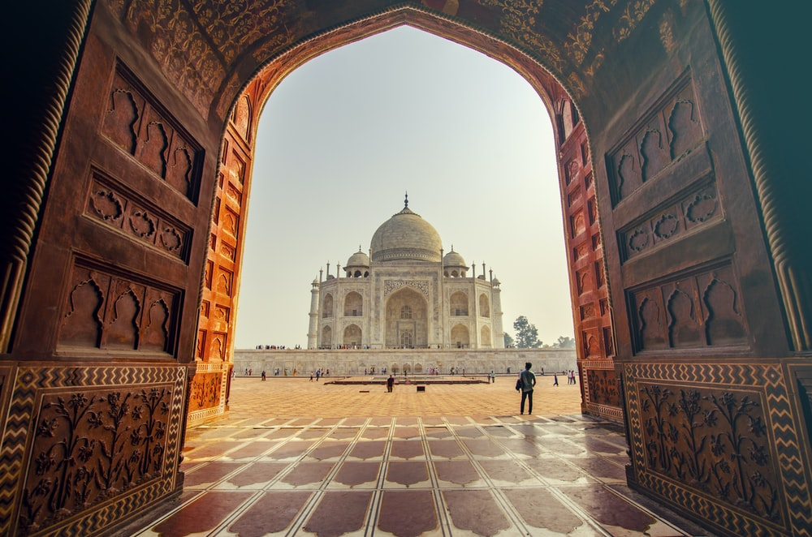

All of us know that traveling as a hobby can get fairly pricey, thereby having the potential to impede
our desire to go places all around the world. However, what if you are deeply snapped at by a
travel bug that's irresistible? You need to be on the move, all the time.
India is consistently ranked as one of the best countries to travel on a budget and within India
there are several cities that can make your idea of taking a trip even better and cheaper.
So, if you have this enticing urge to constantly wander and experience the beauty of this world on a reasonable budget.
#1 STATUE of UNITY
The State of Unity is located in the middle of the Narmada River off the coast of Spura and the Vindhya Mountains.
This area exposes this image to the wind tunnel effect. The air-conditioning flights that took place in the area were studied.
It was found that the wind speed could increase to 130 km / hr.
The result of the back air sequence also had to be included in it. The air gap on the ground, due to the travel condition also had to be considered.
This image is designed to withstand wind speeds of up to 180 km / hr, capturing all of these elements.
Sunset is a great time to visit the garden. The view of the Image of Unity and the setting sun behind the mountains is something you can see!
The Narmada River, which divides the Indian subcontinent — the Satpuras and the Vindhyas — is clearly visible here.
And in front of us is a powerful Symbol of Unity. While you are in the garden, be aware of the location that finds the map of India.
#2 TAJ MAHAL

If you are planning to visit the Taj Mahal in India and are as knowledgeable as I am, you will read every Taj Mahal travel blog on which you can put your hands.
An immense mausoleum of white marble, built in Agra between 1631 and 1648 by order of the Mughal emperor Shah Jahan in memory of his favourite wife, the Taj Mahal is the jewel of Muslim art in India and one of the universally admired masterpieces of the world's heritage.
The entire Taj Mahal complex is symmetrical. Shan Jahan’s grave is an exception. His original idea was to build a black Taj Mahal (made of black onyx) for his grave on the other side of the Yamuna River. However, the project never left the drawing paper and, as a result, his body was buried next to his wife, asymmetrically.
It was commissioned in 1632 by the Mughal emperor Shah Jahan to house the tomb of his favourite wife, Mumtaz Mahal; it also houses the tomb of Shah Jahan himself.
There are some things you need to know about Taj in order to relax and enjoy this good and life experience as it is meant to be.
#3 ISKON TEMPLE , MATHURA
The International Society for Krishna Consciousness, all the more prominently known as ISKCON, is a Hindu strict association with sanctuaries set up across India just as abroad.
Also called the Hare Krishna development, the association follows the line of Gaudiya Vaishnavism, a monotheistic convention inside the Hindu culture.The beautiful ISKCON temples spread across the county serve as great attractions for devotees and travelers who want some time away from the hustle and bustle of city life.
The temple is spotlessly clean and very well maintained. It is dedicated to Lord Krishna. Aarti is conducted every morning and evening. It's good to visit during aarti to be a part of this enchanting way of worship.
Near the temple, at the entrance to the complex is located samadhi shrine (mausoleum) of Bhaktivedanta Swami Prabhupada, built of pure white marble. Krishna-Balaram Mandir enforces one of the highest standards of cleanliness and of deity worship in all of Vrindavan temples.
Enchanting of mantras and singing bhajans was so fulfilling and engaging. You really feel the holy energy here.